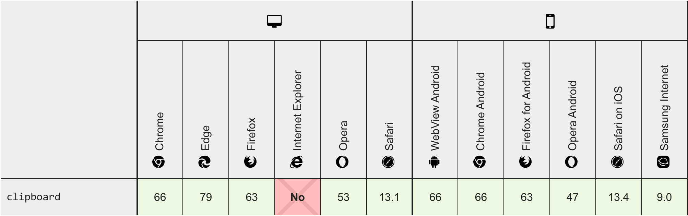

How to access Clipboard
The challenge
Copy large grids of data and store them into the clipboard so that the user can paste it in a new email
Why not document.execCommand('copy')?
- Access is synchronous, i.e. stops JavaScript in the page until complete including displaying and user interacting with any security prompts.
- First one needs to select the element and then copy it which sometimes is problematic.
- OK for small pieces of text. (Text is read from the DOM and placed on the clipboard.)
Clipboard API
- Access is asynchronous and uses JavaScript Promises, can be written so security user prompts (if displayed) don't interrupt the JavaScript in the page.
- Text can be copied to the clipboard directly from a variable.
Clipboard API
- Permissions API
- ClipboardItem
- file blob
Clipboard API
navigator.clipboard.action
Available actions
navigator.clipboard.read()
navigator.clipboard.readText()
navigator.clipboard.write(data)
navigator.clipboard.writeText(data)
Caveats
- Only supported on pages served over HTTPS.
- In Chrome 66 inactive tabs can write to the clipboard without a permissions prompt.
- Privacy concerns.
Browser compatibility
